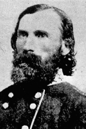

|

|

|
|
|
Confederate general Ambrose Powell Hill was born in
Culpepper, Virginia, on November 9, 1825. In 1842 he was
accepted to West Point Military Academy, where he trained as
an artillery officer. After having to repeat his third year
due to contracting a venereal disease, he graduated
fifteenth in a class of 38. Hill's original graduation class
included such notables as George B. McClellan, George Edward
Pickett, and Thomas J. Jackson. Leaving West Point, Hill
was commissioned as Second Lieutenant in the First
Artillery.
Like so many West Point graduates of his era, A.P. Hill's
first experience of battle was as a commissioned officer in
the Mexican War. During the last moments of the war, Hill
participated in the capture of Mexico City. He was then
stationed at Fort McHenry, Maryland. Later he would put
down an insurrection by the Seminole Indians in Florida. At
the outbreak of the Civil War, Hill felt obligated to defend
his and he resigned his commission on March 1, 1861. He was
made Colonel of the Thirteenth Virginia Volunteer Infantry.
In February of 1862, Hill was promoted to Brigadier General.
In command, Hill saw action at Williamsburg, Virginia and
in the Peninsular Campaign. He was promoted, in May of
1862, to Major General and was made a division commander in
the new Army of Northern Virginia.
A.P. Hill's division came to be known as "Hill's Light
Division" because they could quickly move into emplacements
and organize into fighting positions. Hill distinguished
himself and his command at engagements such as Cedar
Mountain, Second Bull Run, Sharpsburg, Fredericksburg, and
Chancellorsville. Throughout all these engagements, Hill
became famous for leading his division wearing his bright
red battle shirt.
After the death of "Stonewall" Jackson at
Chancellorsville, Hill was promoted to Lieutenant General
and was given command of the III Corps. As a corps
commander, Hill enjoyed limited success. Due to constant
illness, Hill was often missing the fervor that had
previously distinguished him. His leadership in the
Gettysburg and Wilderness campaigns was seriously flawed.
Due to his continuing health problems, Hill took a leave of
absence in May of 1864 and missed the battle of
Spotsylvania. He reclaimed command during the North Anna
and Cold Harbor campaigns.
On April 2, 1865 at the siege of Petersburg, when his
command's lines had collapsed, Hill charged a group of
Pennsylvania volunteers. After drawing his pistol he was
shot dead. Hearing of his death, Lee said, "He is at
rest, and we who are left are the ones to suffer."
Source: Joan Waugh, ed., Facts on File Encyclopedia of American
History: Civil War and Reconstruction, 1856 to 1869 (New York: Facts on
File, 2003), 167-168.
|